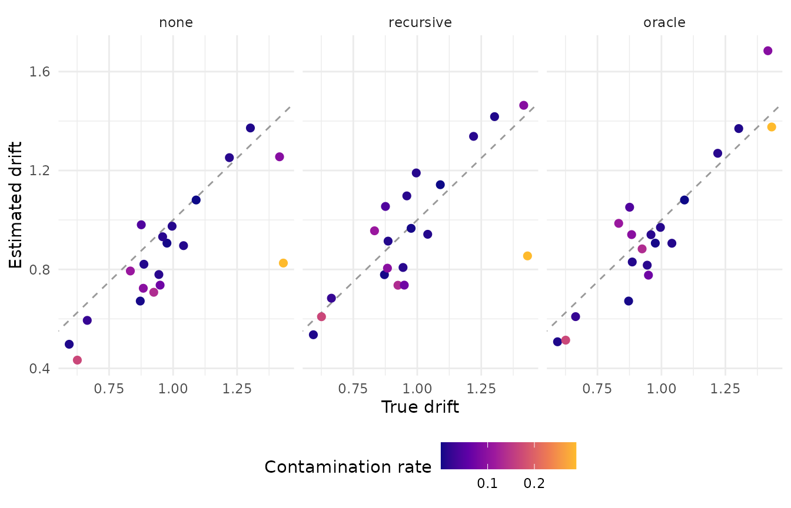

Ground truth: testing a pipeline on data shaped like yours
Source:vignettes/articles/ground-truth.Rmd
ground-truth.RmdContamination is invisible in the data you have. A trial that came from a lapse looks like a trial that came from the decision process, only slower, or faster, or wrong, and every screening rule is a bet about which of those it can tell apart. Every published evaluation of a rule scored that bet on a design that was not yours. This article closes the gap the only way it can be closed: by generating data shaped like your task, contaminating it the way your design plausibly would, running the pipeline you intend to use, and scoring it against the truth the generator carried. That costs a few seconds, and it is the one situation in which a researcher can find out what their pipeline actually does.
The code on this page lives in one file,
ground-truth-chunks.R, next to the article; sourcing it end
to end reruns the whole example.
Three numbers from a pilot
Locate your task by three numbers a pilot gives directly: the mean
correct response time, the proportion correct, and the coefficient of
variation of correct response times. The example uses a moderate task,
the three values in pilot below; the get-started vignette’s
data is faster, and the screening-rules
article shows what a slow one does to an absolute cutoff.
# Three numbers a pilot data set gives directly: the mean correct response
# time, the proportion correct, and the coefficient of variation of correct
# response times. A moderate task is used here.
pilot <- list(mean_rt = 1.00, accuracy = 0.80, cv = 0.35)ez_ddm() inverts the three into diffusion parameters. At
a very large trial count it is exactly the inversion the generator’s own
matching uses, so no internal function is needed:
# Invert the observables into diffusion parameters. At a very large trial
# count ez_ddm() is the exact inversion the generator's own matching uses.
matched <- ez_ddm(
mean_rt = pilot$mean_rt,
var_rt = (pilot$cv * pilot$mean_rt)^2,
accuracy = pilot$accuracy,
n_trials = 1e6
)
matched
#> drift bound ndt edge_corrected
#> 1 0.9698882 1.429334 0.5578869 FALSE
# A non-decision time outside 0.206 to 0.942 s would mean the target lies
# outside the region a diffusion process reaches with published parameters.
matched_par <- list(
drift = matched$drift, bound = matched$bound, ndt = matched$ndt
)One check to make by eye: the implied non-decision time. The generator’s matching accepts targets whose non-decision time falls between 0.206 and 0.942 s, the range published diffusion fits span, and a target outside it is a task no diffusion process reaches with plausible parameters. Here it is 0.56 s. A clean draw of 10,000 trials confirms that the parameters reproduce the three observables:
set.seed(2026095)
clean_check <- r_contaminated(10000, par = matched_par, rate = 0)
correct_rt <- clean_check$rt[clean_check$response == 1]
c(
mean_rt = mean(correct_rt),
accuracy = mean(clean_check$response),
cv = sd(correct_rt) / mean(correct_rt)
)
#> mean_rt accuracy cv
#> 1.021744 0.806500 0.354894The match is not available for the racing generator, whose parameters have no closed-form inversion; the solver that matches it is internal to the package, and the diffusion generator is the one to use here.
Contaminate it the way your design would
Which contaminants a design produces is a question about the design, not about the data. A task with short stimulus onsets, speed pressure, or a rhythmic pace invites anticipations. A long, low-stakes, unsupervised session invites informationless responses and late starts. The example takes the second case, and it lets participants differ in two things: how much they contaminate, and how able they are.
n_participants <- 20
n_trials <- 200
# Contamination the design plausibly produces. An unsupervised online session
# without speed pressure invites disengagement and late starts more than
# anticipations: weights for leading-edge, delay, and informationless.
process_mix <- c(0.2, 0.4, 0.4)
# Participants differ in how much they contaminate (a Beta distribution with
# mean .05 and precision 10) and in ability (a lognormal factor on drift with
# SD 0.2 on the log scale). Both are carried as truth.
set.seed(2026095)
traits <- data.frame(
id = sprintf("p%02d", seq_len(n_participants)),
rate = rbeta(n_participants, 0.05 * 10, 0.95 * 10),
ability = exp(rnorm(n_participants, 0, 0.2))
)
traits$true_drift <- matched$drift * traits$ability
summary(traits$rate)
#> Min. 1st Qu. Median Mean 3rd Qu. Max.
#> 0.0001265 0.0092651 0.0135639 0.0562093 0.0928177 0.2893043
simulated <- bind_rows(lapply(seq_len(n_participants), function(i) {
trials <- r_contaminated(
n_trials,
par = list(
drift = traits$true_drift[i], bound = matched$bound, ndt = matched$ndt
),
process = "mixed", mix = process_mix, rate = traits$rate[i]
)
data.frame(id = traits$id[i], trial = seq_len(n_trials), trials)
}))
table(simulated$process)
#>
#> clean delay informationless leading_edge
#> 3772 91 82 55228 of 4000 trials are contaminants, at participant rates from 0% to 28.9%. Every one of them is labelled, and every participant’s true drift is known, which is what the rest of the page uses.
What the rules disagree about
With real data the comparison of rules ends at agreement, because nothing says which rule is right. It is still worth running first, because the disagreements tell you where the bet is being placed:
roster <- list(
cutoff = rule_cutoff(0.18, 3),
sd = rule_sd(2.5),
mad = rule_mad(2.5),
recursive = rule_recursive("modified"),
mixture = rule_mixture("lognormal"),
ewma = rule_ewma()
)
comparison <- screen_compare(
simulated$rt, roster, response = simulated$response, .by = simulated$id
)
comparison
#> <rtprep comparison> 4000 trials, 6 rules
#>
#> cutoff dropped 0.3%
#> sd dropped 2.9%
#> mad dropped 9.0%
#> recursive dropped 2.4%
#> mixture dropped 2.4%
#> ewma dropped 6.3%
#>
#> least agreement: mad vs ewma, 84.6% of decisions (Jaccard 0.00)
comparison$agreement
#> rule_x rule_y agree jaccard n_only_x n_only_y n_both
#> 1 cutoff sd 0.97350 0.09401709 0 106 11
#> 2 cutoff mad 0.91225 0.03038674 0 351 11
#> 3 cutoff recursive 0.97900 0.11578947 0 84 11
#> 4 cutoff mixture 0.97875 0.11458333 0 85 11
#> 5 cutoff ewma 0.93375 0.00000000 11 254 0
#> 6 sd mad 0.93875 0.32320442 0 245 117
#> 7 sd recursive 0.98950 0.66929134 32 10 85
#> 8 sd mixture 0.98075 0.46896552 49 28 68
#> 9 sd ewma 0.90725 0.00000000 117 254 0
#> 10 mad recursive 0.93325 0.26243094 267 0 95
#> 11 mad mixture 0.93350 0.26519337 266 0 96
#> 12 mad ewma 0.84600 0.00000000 362 254 0
#> 13 recursive mixture 0.98575 0.54032258 28 29 67
#> 14 recursive ewma 0.91275 0.00000000 95 254 0
#> 15 mixture ewma 0.91250 0.00000000 96 254 0Two things stand out before any truth is consulted. The chart removes a set of trials no other rule touches: its Jaccard overlap with every other rule is zero, because it cuts from below and the others cut from above. And the ±2.5 MAD criterion removes 3.8 times as many trials as the recursive criterion or the mixture, while agreeing with them on more than 93% of decisions, which is the case the agreement statistic was built to expose.
Score the pipeline against the carried truth
The truth turns the same keep matrix into detection rates, overall and by contaminant process:
# Every rule against the carried truth, overall and by contaminant process.
score_rule <- function(keep) {
by_process <- tapply(!keep, simulated$process, mean)
data.frame(
dropped = mean(!keep),
sensitivity = mean(!keep[simulated$contaminant]),
specificity = mean(keep[!simulated$contaminant]),
anticipations = by_process[["leading_edge"]],
delays = by_process[["delay"]],
informationless = by_process[["informationless"]]
)
}
scored <- bind_rows(
lapply(names(roster), function(name) score_rule(comparison$keep[, name])),
.id = "rule"
) |>
mutate(rule = names(roster))
scored
#> rule dropped sensitivity specificity anticipations delays
#> 1 cutoff 0.00275 0.03508772 0.9992047 0.0000000 0.07692308
#> 2 sd 0.02925 0.16228070 0.9787911 0.0000000 0.36263736
#> 3 mad 0.09050 0.32894737 0.9239130 0.0000000 0.72527473
#> 4 recursive 0.02375 0.14473684 0.9835631 0.0000000 0.31868132
#> 5 mixture 0.02400 0.19298246 0.9862142 0.0000000 0.43956044
#> 6 ewma 0.06350 0.21491228 0.9456522 0.7272727 0.01098901
#> informationless
#> 1 0.01219512
#> 2 0.04878049
#> 3 0.10975610
#> 4 0.04878049
#> 5 0.04878049
#> 6 0.09756098No rule that reads only response times finds a single anticipation; the chart finds 73% of them. Delayed start-ups are found in proportion to how aggressive the rule is, from 32% for the modified recursive criterion to 73% for ±2.5 MAD, and the aggressive rule pays for it in specificity. Informationless responses are found by almost nothing: every rule’s hit rate on them sits at or near its own false-alarm rate, because those trials have the decision process’s own timing.
The rest of the page carries one rule forward, the modified recursive
criterion, the one the screening-rules
article shows was built to hold its false-alarm rate across group
sizes; swapping it for another is one column of
comparison$keep, which the last section does. On this data
it removes 2.4% of trials and finds 14% of the contaminants.
Was what you removed what you thought?
Two diagnostics apply here. check_guessing() asks
whether the fast trials a rule removed were guesses, by testing their
accuracy against chance. It tests only trials that were both removed and
fast, so a rule that removes nothing from below gives it nothing to
test:
# The guessing check applies only to trials a rule removed from below. The
# modified recursive criterion removes none, so it has nothing to test; the
# EWMA chart does, and the check is pooled across participants because the
# per-participant counts are small: summary(per_participant$n_tested) below
# shows how small.
recursive_keep <- comparison$keep[, "recursive"]
ewma_keep <- comparison$keep[, "ewma"]
check_guessing(recursive_keep, simulated$rt, simulated$response) |>
select(n_tested, prop_upper, bf_01, bf_evidence)
#> n_tested prop_upper bf_01 bf_evidence
#> 1 0 NA NA <NA>
per_participant <- simulated |>
mutate(keep = ewma_keep) |>
reframe(check_guessing(keep, rt, response), .by = id)
summary(per_participant$n_tested)
#> Min. 1st Qu. Median Mean 3rd Qu. Max.
#> 2.00 2.00 9.00 12.70 19.75 40.00
check_guessing(ewma_keep, simulated$rt, simulated$response) |>
select(n_tested, prop_upper, bf_01, bf_evidence)
#> n_tested prop_upper bf_01 bf_evidence
#> 1 251 0.6613546 2.227964e-05 strong_against_guessingThe recursive criterion has no testable trial. The chart does, and pooled across participants the evidence is strong against guessing: the accuracy of what it removed is 0.66, because the removed set is mostly genuine trials that happened to be fast, with the anticipations a minority inside it. Per participant the check tests a median of 9 trials, and the largest Bayes factor for guessing that 9 trials can produce, on an exactly even split, is 2.46 (anecdotal for guessing). The pooled call is the one with the trials behind it; the per-participant calls spread over the categories the count allows:
table(per_participant$bf_evidence, useNA = "ifany")
#>
#> anecdotal_against_guessing anecdotal_for_guessing
#> 10 10The leading-edge shift statistic asks, after a cut at the 5th percentile, how far the surviving minimum moved toward the original 10th percentile. Near 1 means the removed mass was displaced from the core, which is what anticipations look like; near 0 means a genuine edge was cut:
# The leading-edge shift statistic: cut at the empirical 5th percentile and
# measure how far the surviving minimum moved toward the original 10th
# percentile. Near 1, the removed mass was displaced (anticipations); near 0,
# a genuine edge was cut. Returned to compare across participants or against
# a clean reference; it defines no cutpoint.
leading_edge_shift <- function(rt) {
q05 <- quantile(rt, 0.05)
q10 <- quantile(rt, 0.10)
kept <- rt[rt > q05]
(min(kept) - min(rt)) / (q10 - min(rt))
}
shift_by_participant <- tapply(simulated$rt, simulated$id, leading_edge_shift)
mean(shift_by_participant)
#> [1] 0.7639508Across participants the statistic averages 0.76 with a standard deviation of 0.13, while anticipations make up 1.4% of the trials. The clean draw from the matching step gives the reference: cut into 50 blocks of 200 trials, it averages 0.62 with a standard deviation of 0.12. The function returns a value to compare across participants or against a clean reference like this one; it defines no cutpoint.
What the pipeline leaves behind
The question that matters to an individual-differences study is not
the mean error but whether each participant’s error tracks their own
contamination rate. Three pipelines, each ending in
ez_ddm(): nothing removed, the recursive criterion, and the
oracle that removes exactly the contaminants:
# Drift per participant under three pipelines, against the drift each
# participant was generated with: nothing removed, the chosen rule, and the
# perfect-exclusion oracle that only generated data allows.
estimate_drift <- function(keep, label) {
simulated[keep, ] |>
reframe(rt_summary(rt, response), .by = id) |>
mutate(ez_ddm(mean_rt, var_rt, n_upper / n_trials, n_trials)) |>
left_join(traits, by = "id") |>
transmute(pipeline = label, id, rate, true_drift, drift,
error = drift - true_drift)
}
estimates <- bind_rows(
estimate_drift(rep(TRUE, nrow(simulated)), "none"),
estimate_drift(recursive_keep, "recursive"),
estimate_drift(!simulated$contaminant, "oracle")
)
estimates |>
summarise(
mean_error = mean(error),
rate_error_r = cor(rate, error),
validity_r = cor(true_drift, drift),
.by = pipeline
)
#> pipeline mean_error rate_error_r validity_r
#> 1 none -0.11248418 -0.7668187 0.8047922
#> 2 recursive -0.02268775 -0.6519701 0.7508539
#> 3 oracle -0.01963517 0.1085265 0.9285304
drift_plot <- estimates |>
mutate(pipeline = factor(pipeline, levels = c("none", "recursive", "oracle"))) |>
ggplot(aes(true_drift, drift, colour = rate)) +
geom_abline(slope = 1, intercept = 0, linetype = 2, colour = "grey60") +
geom_point(size = 2) +
scale_colour_viridis_c(option = "C", end = 0.85) +
facet_wrap(~pipeline) +
labs(x = "True drift", y = "Estimated drift", colour = "Contamination rate")
drift_plot + theme_minimal() + theme(legend.position = "bottom")
On this sample the recursive criterion moves the mean error from -0.11 to -0.02. The correlation between a participant’s rate and their error is the harder quantity: it moves from -0.77 to -0.65 where the oracle gives 0.11. The scoring table above says why the rule cannot close that gap: the informationless responses, which have the decision process’s own timing, are found at the rule’s false-alarm rate, and a participant’s share of them scales with their contamination rate. Twenty participants make these correlations noisy.
Swap the rule and run it again
Everything on this page is a function of one column of
comparison$keep. Swapping the modified recursive criterion
for the ±2.5 MAD criterion is one line, and the same summary puts the
two next to the no-preprocessing baseline and the oracle, with the
detection columns the truth provides alongside:
scored_all <- bind_rows(
scored,
score_rule(rep(TRUE, nrow(simulated))) |> mutate(rule = "none"),
score_rule(!simulated$contaminant) |> mutate(rule = "oracle")
)
bind_rows(estimates, estimate_drift(comparison$keep[, "mad"], "mad")) |>
summarise(
mean_error = mean(error),
rate_error_r = cor(rate, error),
.by = pipeline
) |>
inner_join(
select(scored_all, rule, dropped, sensitivity, specificity),
by = join_by(pipeline == rule)
) |>
mutate(
pipeline = factor(pipeline, levels = c("none", "recursive", "mad", "oracle")),
across(where(is.numeric), \(x) round(x, 3))
) |>
arrange(pipeline)
#> pipeline mean_error rate_error_r dropped sensitivity specificity
#> 1 none -0.112 -0.767 0.000 0.000 1.000
#> 2 recursive -0.023 -0.652 0.024 0.145 0.984
#> 3 mad 0.125 -0.467 0.090 0.329 0.924
#> 4 oracle -0.020 0.109 0.057 1.000 1.000This is the table the comparison
article builds from real data, with the columns only generated data
has. Twenty participants and one seed produced it, and it is a property
of this generator, this process mix, and this roster.
n_participants, n_trials,
process_mix, and the three numbers in pilot
are what to change to make it yours; ground-truth-chunks.R
sourced end to end reruns the page.